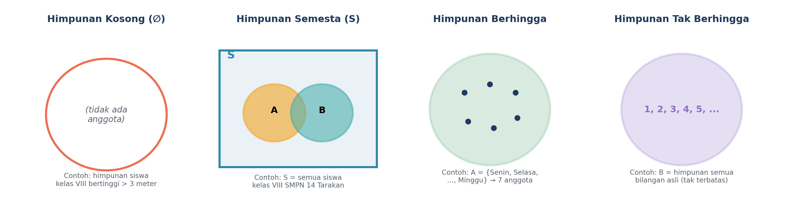
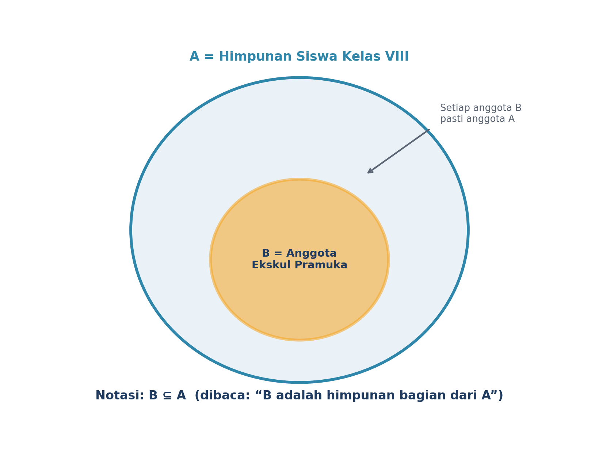
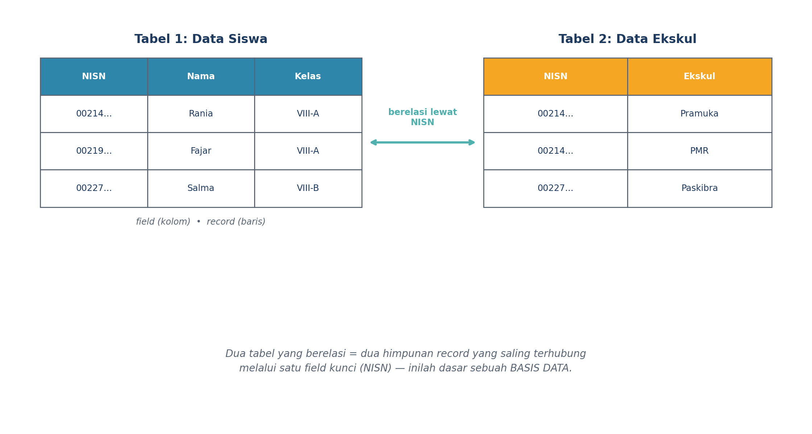
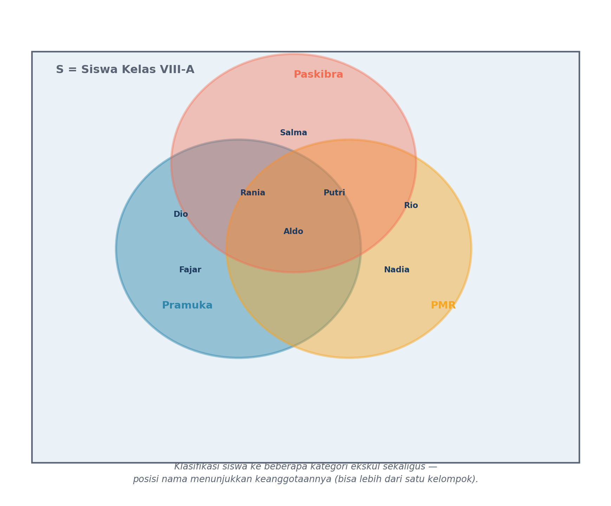
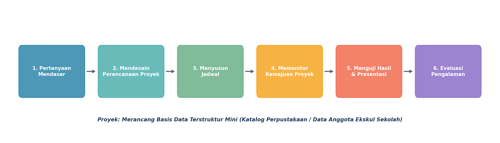

1Jenis-Jenis Himpunan
Masih ingat kan, himpunan itu kumpulan data dengan ciri yang sama, ditulis pakai notasi
{ }? Nah, ternyata himpunan itu punya beberapa jenis, lho!

Himpunan Semesta (S) = himpunan besar yang memuat semua objek yang sedang dibahas.
Himpunan Berhingga = anggotanya bisa dihitung dan jumlahnya pasti.
Himpunan Tak Berhingga = anggotanya tidak terbatas jumlahnya.
Yang paling sering kita pakai untuk data sehari-hari adalah himpunan berhingga — misalnya daftar siswa di satu kelas, yang pasti bisa dihitung jumlahnya.
2Konsep Baru: Himpunan Bagian (Subset)
Coba bayangkan: semua anggota ekskul Pramuka di kelasmu itu pasti juga siswa kelas VIII, kan? Nah, dalam bahasa himpunan, kita bilang "himpunan anggota Pramuka" adalah himpunan bagian dari "himpunan siswa kelas VIII".

B ⊆ A dibaca "B adalah himpunan bagian dari A".Syaratnya: SETIAP anggota B juga harus menjadi anggota A. Kalau ada satu saja anggota B yang bukan anggota A, maka B BUKAN himpunan bagian dari A.
Contoh Lain di Sekitarmu
- Himpunan siswa juara kelas ⊆ Himpunan seluruh siswa kelas VIII
- Himpunan buku fiksi ⊆ Himpunan seluruh buku di perpustakaan sekolah
- Himpunan hari libur ⊆ Himpunan seluruh hari dalam satu tahun
3Himpunan di Balik Data Sekolah
Pernah lihat data siswa di komputer Tata Usaha sekolah? Atau katalog buku perpustakaan? Semua itu sebenarnya adalah himpunan data yang disusun rapi dalam bentuk tabel.

Record = satu baris data, berisi informasi lengkap tentang satu orang/benda.
Relasi = hubungan antar-tabel, biasanya lewat satu field kunci yang sama.
Kalau dua tabel bisa saling terhubung seperti itu, itulah cikal-bakal basis data (database) — sistem penyimpanan data yang dipakai hampir semua aplikasi, dari e-rapor sekolah sampai aplikasi belanja daring!
4Satu Siswa, Banyak Kelompok
Coba pikirkan: bisa nggak, satu siswa jadi anggota ekskul Pramuka sekaligus anggota PMR? Bisa banget! Nah, ini yang disebut klasifikasi data ke beberapa kategori sekaligus, dan diagram Venn adalah alat yang pas untuk menggambarkannya.

Lihat posisi nama pada gambar: yang berada di bagian yang saling tumpang tindih artinya ikut lebih dari satu ekskul. Dengan diagram Venn, pengelompokan data yang rumit jadi lebih mudah dilihat!
5Misi: Jadi Perancang Basis Data!
Sekarang giliran kamu dan kelompokmu jadi "arsitek data". Ikuti alur Project Based Learning (PjBL) berikut ini:

- Pilih tema: Katalog Perpustakaan Sekolah atau Data Anggota Ekskul Sekolah.
- Tentukan minimal 4 field (atribut) yang mau dicatat.
- Buat tabel data berisi 5-8 record contoh.
- Klasifikasikan data ke 2-3 kategori menggunakan diagram Venn.
- Presentasikan hasil rancanganmu ke teman sekelas!
Poin ini penting banget — guru akan menilai langsung hasil rancangan dan presentasi kelompokmu, jadi simak baik-baik penjelasan guru sebelum mulai merancang, ya!
6Yuk, Coba Sendiri!
Sebelum lanjut ke LKPD, coba jawab dulu pertanyaan iseng ini bareng teman sebangkumu:
- Apakah "himpunan siswa perempuan kelas VIII-A" merupakan himpunan bagian dari "himpunan siswa kelas VIII-A"? Jelaskan!
- Sebutkan 4 field yang menurutmu penting dicatat dalam tabel data anggota perpustakaan sekolah.
- Berikan satu contoh himpunan kosong (∅) yang ada di sekitarmu!
🌟 Rangkuman Kilat
Kosong (∅), semesta (S), berhingga, dan tak berhingga.
B ⊆ A jika setiap anggota B juga anggota A.
Field (kolom), record (baris), tabel, dan relasi — dasar sebuah basis data.
Diagram Venn membantu mengelompokkan data ke beberapa kategori sekaligus.
Sampai ketemu di pertemuan berikutnya, ya! Kita bakal belajar memodelkan persoalan logika pakai himpunan — makin seru! 🧠✨